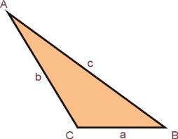

y como consecuencia, sus tres ángulos también son diferentes. La palabra "escaleno"
proviene del latín "scalenus", que significa desigual.
Características principales:
Lados diferentes: Ninguno de los tres lados del triángulo escaleno tiene la misma longitud.
Ángulos diferentes: Debido a que los lados son diferentes, los ángulos internos del triángulo también son distintos entre sí.
Suma de ángulos: Al igual que cualquier otro triángulo, la suma de los tres ángulos internos de un triángulo escaleno siempre es 180 grados.


Lados diferentes: Ninguno de los tres lados del triángulo escaleno tiene la misma longitud.
Ángulos diferentes: Debido a que los lados son diferentes, los ángulos internos del triángulo también son distintos entre sí.
Suma de ángulos: Al igual que cualquier otro triángulo, la suma de los tres ángulos internos de un triángulo escaleno siempre es 180 grados.